Du scénario au storyboard 3D, en un seul outil.
From script to 3D storyboard, in a single tool.
Import, dépouillement IA, composition de plans — tout ce dont votre studio a besoin pour la préprod animation.
Import, AI breakdown, shot composition — everything your studio needs for animation pre-production.
Les studios jonglent entre 3 à 5 logiciels [src] sans lien entre eux. La France est le 3e producteur mondial d'animation [src] — mais sa préprod reste artisanale.
Studios juggle between 3 to 5 disconnected tools [src]. France is the world's 3rd largest animation producer [src] — yet its pre-production remains manual.
Les scénarios vivent dans des fichiers texte, déconnectés du reste du pipeline. Les studios utilisent 3 à 5 logiciels différents [src], sans lien entre eux.
Scripts live in text files, disconnected from the rest of the pipeline. Studios use 3 to 5 different tools [src], with no link between them.
Identifier chaque personnage, décor et accessoire séquence par séquence — 1 à 2 jours par épisode [src], encore fait sur tableur ou papier dans la plupart des studios.
Identifying every character, set and prop sequence by sequence — 1 to 2 days per episode [src], still done on spreadsheets or paper in most studios.
Moins de 3 % des créateurs utilisent un outil de storyboard dédié [src]. La plupart dessinent à la main, sans pouvoir tester les cadrages dans l'espace réel.
Less than 3% of creators use a dedicated storyboard tool [src]. Most draw by hand, unable to test framings in actual 3D space.
Importez vos scénarios en un clic. Le lecteur structuré en 3 colonnes fait gagner un temps précieux à l'ensemble de l'équipe.
Import your scripts in one click. The structured 3-column reader saves valuable time for the entire team.
L'IA analyse chaque séquence et identifie automatiquement personnages, décors, accessoires…
AI analyses each sequence and automatically identifies characters, sets, props…
Composez vos plans dans une vraie scène 3D : mannequins articulés, caméra libre, réutilisation de cadrages entre épisodes, séquenceur intégré.
Compose your shots in a real 3D scene: articulated mannequins, free camera, cross-episode framing reuse, built-in sequencer.
Le seul outil qui couvre l'intégralité de la chaîne de préprod animation.
The only tool that covers the entire animation pre-production pipeline.
Glissez un fichier scénario, et Alta le transforme instantanément en un lecteur structuré. Chaque réplique, chaque action, chaque didascalie — organisée et accessible.
Drop a script file, and Alta instantly transforms it into a structured reader. Every line, every action, every stage direction — organised and accessible.
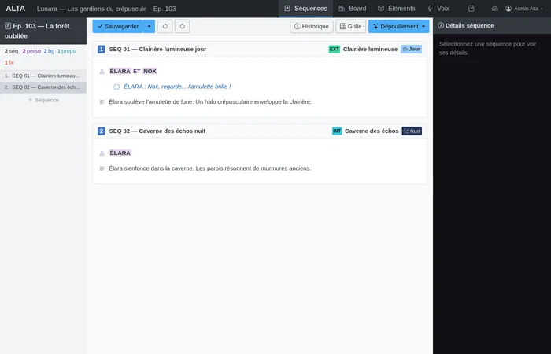
Personnages, décors, accessoires… chaque composant de votre univers est catalogué, coloré, et prêt à être glissé dans la scène 3D.
Characters, sets, props… every component of your universe is catalogued, colour-coded, and ready to be dragged into the 3D scene.
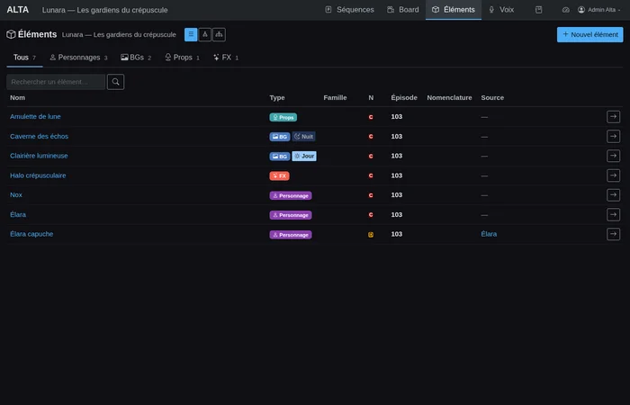
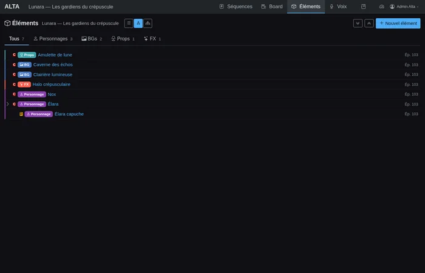
Plus besoin de dessiner. Placez vos personnages, orientez votre caméra, ajustez la pose — et capturez le plan parfait. Le tout dans votre navigateur.
No drawing needed. Place your characters, orient your camera, adjust the pose — and capture the perfect shot. All in your browser.
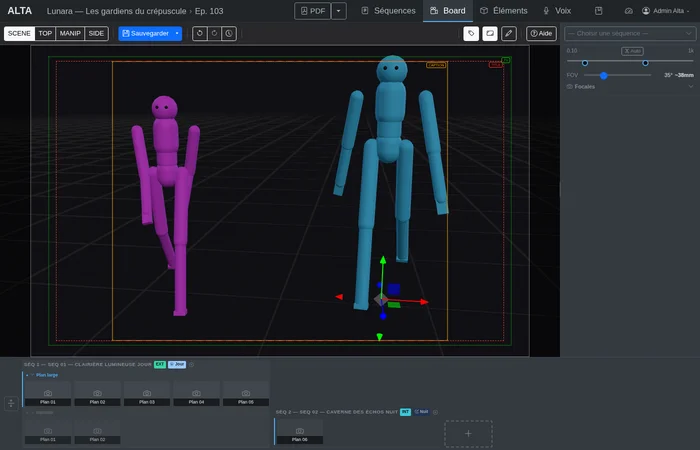
Séquenceur de plans
Shot sequencer
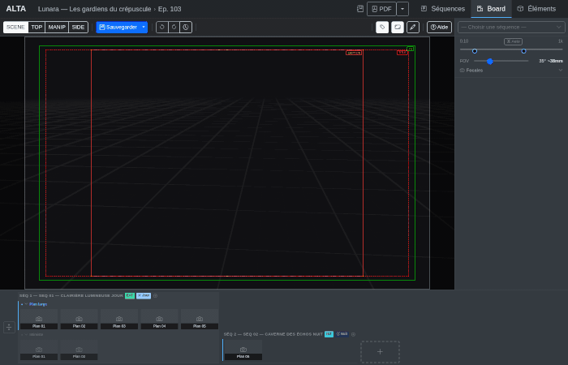
Mannequins articulés
Articulated mannequins
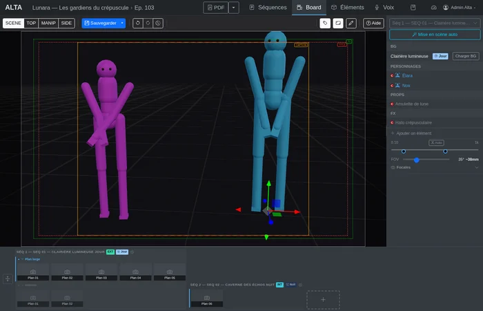
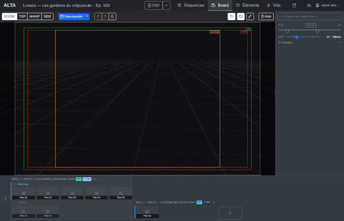
Inventaire et drag & drop
Inventory and drag & drop
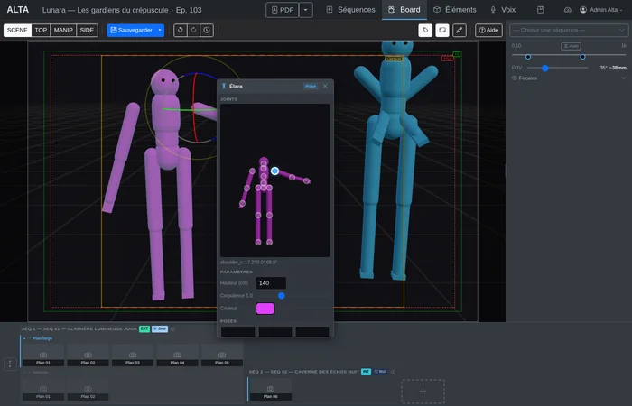
Contrôle de pose
Pose control
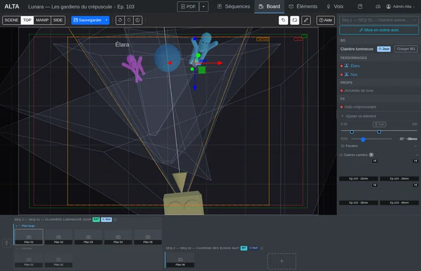
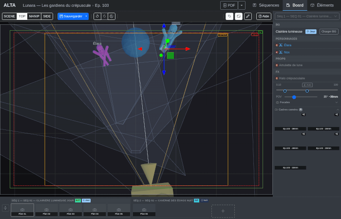
Réutilisation de caméra
Camera reuse
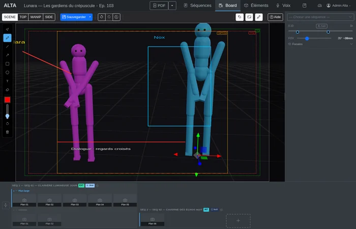
Annotations 2D
2D annotations
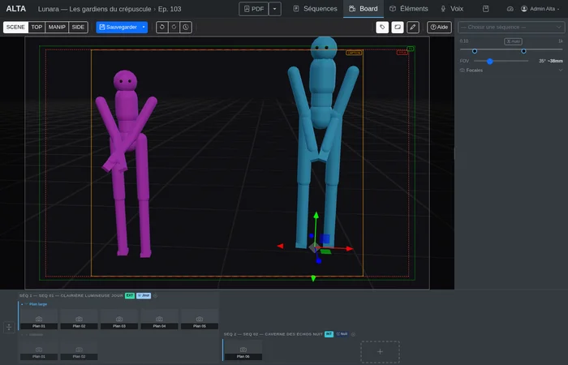
Prises (variantes)
Takes (variants)
6 types de rig : humanoïde, quadrupède, oiseau, poisson, mammifère marin, véhicule. Chaque articulation est contrôlable, avec des contraintes réalistes.
6 rig types: humanoid, quadruped, bird, fish, marine mammal, vehicle. Every joint is controllable, with realistic constraints.
Sauvegardez et réappliquez des poses en un clic. Construisez votre bibliothèque au fil du temps.
Save and reapply poses in one click. Build your library over time.
FOV ajustable, rotation orbitale, safe zones TV. Trouvez le cadrage parfait.
Adjustable FOV, orbital rotation, TV safe zones. Find the perfect framing.
Retrouvez les cadrages existants entre plans et épisodes. Aperçus 3D en temps réel, application en un clic.
Find existing framings across shots and episodes. Real-time 3D previews, one-click apply.
Timeline en vignettes pour organiser, réordonner et naviguer entre vos plans.
Thumbnail timeline to organise, reorder, and navigate between your shots.
Expérimentez sans risque. Chaque action est réversible, sans limite.
Experiment fearlessly. Every action is reversible, with no limit.
Glissez décors, accessoires et personnages depuis l'inventaire vers la scène 3D.
Drag sets, props, and characters from the inventory into the 3D scene.
Dessinez par-dessus la scène 3D : flèches, textes, traits, formes. Les annotations suivent la caméra.
Draw over the 3D scene: arrows, text, lines, shapes. Annotations follow the camera.
Créez des variantes de mise en scène pour une même séquence. Comparez côte à côte et gardez la meilleure.
Create staging variants for the same sequence. Compare side by side and keep the best one.
Exportez votre storyboard en PDF imprimable — annotations 2D incluses — pour la revue en équipe.
Export your storyboard as a printable PDF — 2D annotations included — for team review.
Chaque outil couvre une partie du workflow. Voici comment ils se comparent. [src]
Each tool covers part of the workflow. Here's how they compare. [src]
| Fonctionnalité | Feature | Alta | Storyboard Pro | Flix | StudioBinder | |
|---|---|---|---|---|---|---|
| Import scénario structuré | Structured script import | Live-action | Live-action | |||
| Dépouillement IA | AI breakdown | |||||
| Mise en scène auto (IA) | AI auto-staging | |||||
| Synthèse vocale par personnage | Per-character voice synthesis | |||||
| Dessin 2D / sketch | 2D drawing / sketch | Annotations | Annotations | |||
| Storyboard 3D | 3D storyboard | |||||
| Animatique / timeline | Animatic / timeline | |||||
| Mannequins paramétriques | Parametric mannequins | |||||
| Prises (variantes de mise en scène) | Takes (staging variants) | |||||
| Gestion d'assets versionnés | Versioned asset management | Panels | Panels | |||
| Réutilisation caméra cross-épisodes | Cross-episode camera reuse | |||||
| Versionnement du scénario | Script versioning | |||||
| Suivi de production | Production tracking | |||||
| 100 % web | 100% web-based | |||||
| Self-hosted (vos données chez vous) | Self-hosted (your data stays yours) | |||||
| Plans tarifaires et facturation | Pricing plans and billing |
En amont, agrégez vos assets existants. En aval, exportez en formats ouverts. Alta est un maillon de votre pipeline, pas un silo.
Upstream, aggregate your existing assets. Downstream, export in open formats. Alta is a link in your pipeline, not a silo.
Vos assets existants
Your existing assets
ODT · DOC · DOCX
ODT · DOC · DOCX
Annotation automatique
Automatic annotation
Composition de plans
Shot composition
Formats ouverts
Open formats
glTF · JSON · PNG · PDF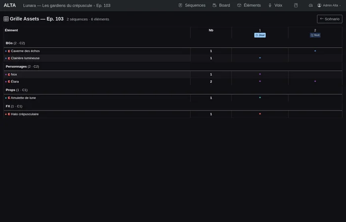
Alta est un maillon de votre pipeline, pas un silo.
Alta is a link in your pipeline, not a silo.
Né de plusieurs années d'usage quotidien en studio d'animation professionnel, Alta a été entièrement réécrit avec les technologies modernes du web. Le résultat : un outil rapide, fiable, accessible depuis n'importe quel navigateur.
Born from years of daily use in a professional animation studio, Alta has been entirely rewritten with modern web technologies. The result: a fast, reliable tool accessible from any browser.
Three.js + WebGL pour un storyboard 3D fluide directement dans le navigateur, sans plugin.
Three.js + WebGL for a smooth 3D storyboard directly in the browser, no plugin needed.
Gemini analyse le scénario et identifie automatiquement les éléments — personnages, décors, accessoires…
Gemini analyses the script and automatically identifies elements — characters, sets, props…
Aucune installation. Un navigateur suffit. Données centralisées, collaboration naturelle.
No installation. A browser is all you need. Centralised data, natural collaboration.
Abonnements (free, indie, studio, enterprise), facturation Stripe, quotas par plan — ou déployez sur vos propres serveurs.
Subscriptions (free, indie, studio, enterprise), Stripe billing, per-plan quotas — or deploy on your own servers.
Né de plusieurs années d'usage en studio d'animation professionnel. En cours de finalisation pour une mise à disposition externe.
Born from years of use in a professional animation studio. Being finalised for external availability.